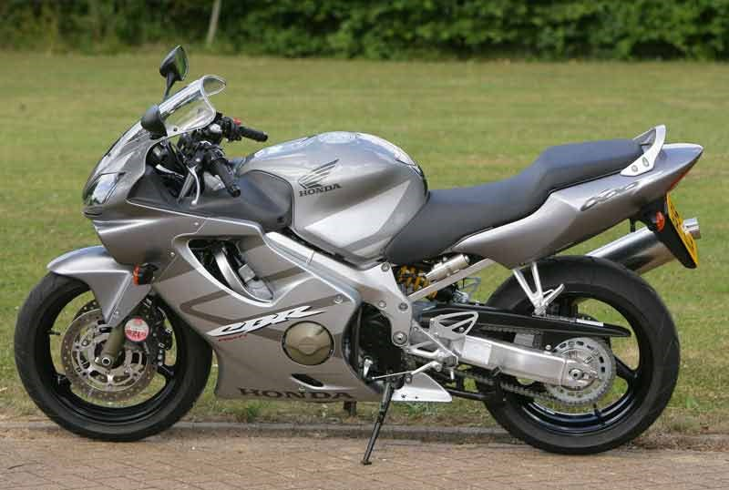
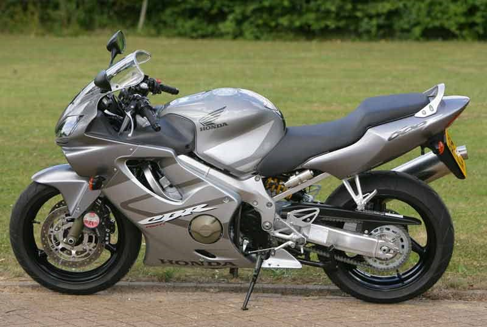

Feel the power
Honda CBR 600 F4I
The Honda CBR600F4i is a sport bike that was produced by Honda from 2001 to 2006. Two UK versions of the F4i were released in 2001. The CBR600F F1 and onwards had the banana style seat found on pre PGM FI bikes whilst the CBR600F FS1/FS2 (the F sport) were sold with the two tier seat units, black frames and various other performance upgrades as found in the US model CBR600F4I.The F sport was discontinued upon the arrival of the CBR600RR in 2003. In 2003, Honda introduced the CBR600RR, as a higher-performance race-ready, race replica alternative to Honda's more street oriented 600-class sport bike, the CBR600F4i. In 2004, the one-piece "banana" seat model replaced the split seat model. This bike sacrificed a little performance but gained a more comfortable riding position with the one piece seat, in addition to the clip-ons mounted above the top fork clamp already and also replacing the black frame with one in silver.As well as an engine configuration better suited to everyday riding. This model is the same as the CBR600F1 and onwards that was sold in the UK from 2001.The F4i remained available for three more years before being discontinued, with the 2006 model being the final one to be released. No major updates were made in these final years except for color scheme changes.
To see Honda CBR600F4i video review click here
- Years: 2001-2006
- Power: 109 hp
- Top speed: 249 km/h
- Dry weight: 169 kg
- Engine type: inline-4
- Frame: Aluminum twin-spar
 
